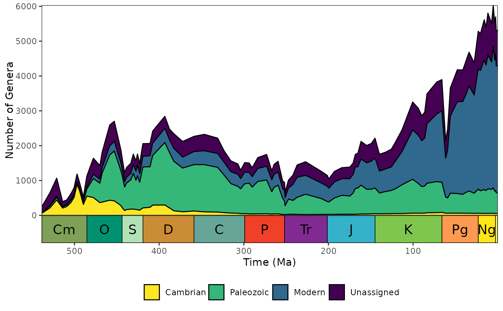
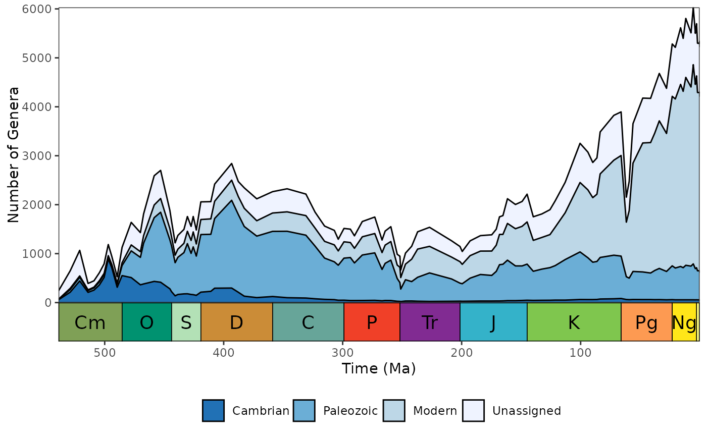
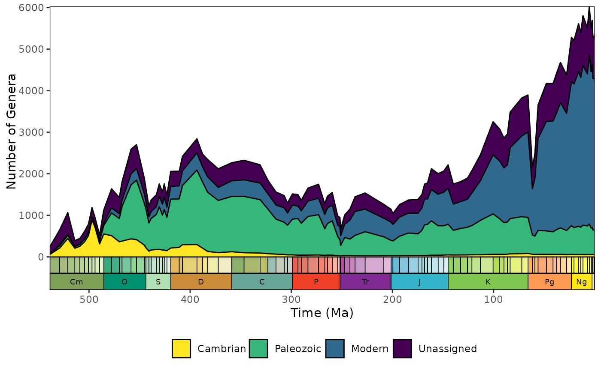

This function plots Sepkoski's evolutionary fauna (Sepkoski, 1981), using the Sepkoski (2002) fossil marine animal genera compendium (i.e. the included sepkoski dataset). No changes have been made to any taxonomic names in this dataset. However, first and last appearance intervals have been updated to stages from the International Geological Time Scale 2023. As such, minor differences may be observed to previously published plots. See interval_table for interval definitions.
Value
Function is primiarly used to plot Sepkoski's curve with ggplot2. A ggplot object is returned invisibly.
Details
Taxa are assigned to evolutionary fauna (EF) categories as follows:
Cambrian EF: Trilobita, Polychaeta, Tergomya ("Monoplacophora"), Inarticulata, and Hyolithomorpha.
Paleozoic EF: Anthozoa, Articulata, Asteroidea, Cephalopoda, Crinoidea, Ostracoda, Ophiuroidea, Somasteroidea, and Stenolaemata.
Modern EF: Bivalvia, Chondrichthyes, Demospongia, Echinoidea, Gastropoda, Gymnolaemata, Malacostraca, and Osteichthyes.
References
Sepkoski, J. J. (1981). A factor analytic description of the Phanerozoic marine fossil record. Paleobiology, 7(1), pp. 36–53.
Sepkoski, J. J. (2002). A compendium of fossil marine animal genera. Bulletins of American Paleontology, 363, pp. 1–560.
Examples
# Generate default plot
sepkoski_curve()

# Customise plot colours
library(ggplot2)
sepkoski_curve() +
scale_fill_brewer()
#> Scale for fill is already present.
#> Adding another scale for fill, which will replace the existing scale.

# Customise geological timescale
library(deeptime)
sepkoski_curve() +
coord_geo(
pos = as.list(rep("bottom", 2)),
dat = list("stages", "periods"),
height = list(unit(1, "lines"), unit(1, "line")),
size = list(2.5, 2.5),
lab = list(FALSE, TRUE))
#> Coordinate system already present. Adding new coordinate system, which will
#> replace the existing one.
